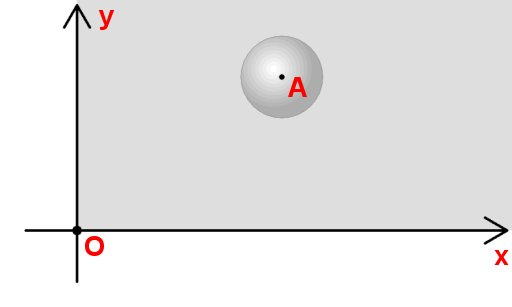
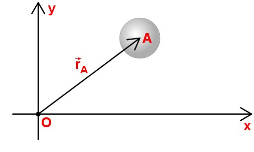
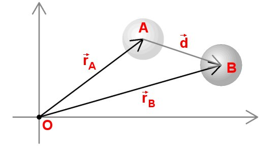
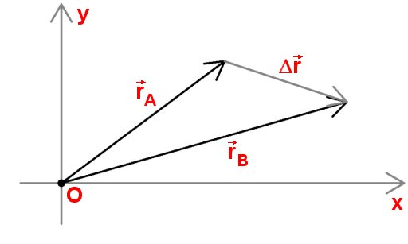
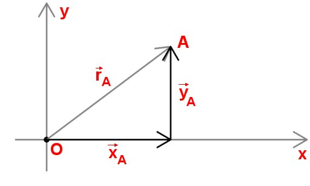
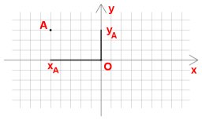
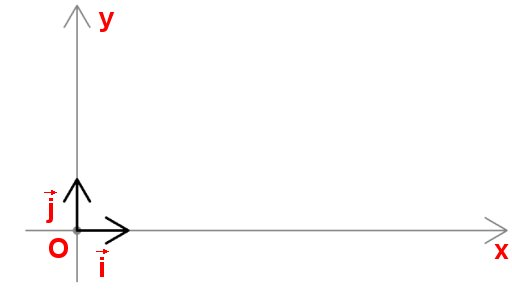
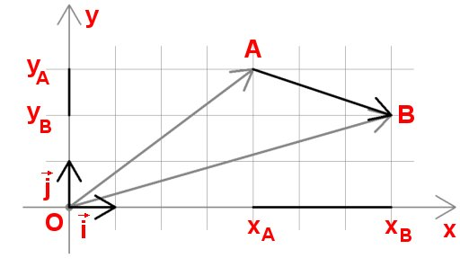

- Fig. 1
- Un sistem de referinţă pentru descrierea mişcării unei bile.
|

- Fig. 2
- Vectorul poziţie al unui punct.
|
A în B.'); return false" >
- Fig. 3
- Bila se mişcă, centrul său deplasându-se din A în B.
|

- Fig. 4
- Deplasarea este variaţia poziţiei.
|

- Fig. 5
- O succesiune de deplasări în lungul axelor.
|
xA a punctului A este negativă, iar coordonata yA este pozitivă.'); return false" >
- Fig. 6
- Coordonata xA a punctului A este negativă, iar coordonata yA este pozitivă.
|

- Fig. 7
- Versorii axelor.
|

- Fig. 8
- Descrierea deplasării în raport cu axele de referinţă.
|